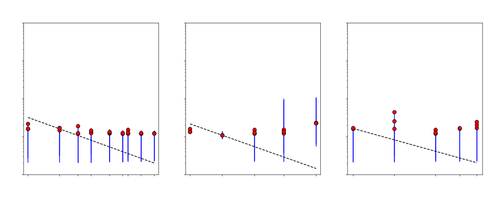

Scaling analysis of ACCESS-CM2
Marshall Ward
National Computational Infrastructure

NCI Optimization Project
- Performance analysis
- ACCESS model suite
- Geosciences (e.g. Landsat)
- Lattice QCD, Bioinformatics, ...
- Parallel MPI-IO implementations:
- Unified Model
- WAVEWATCH
- MOM (ongoing)
- Tools and methodologies
- HDF5 and Lustre deep-dive
- Peak performance via Roofline
- cubex, nchook
ACCESS-CM2
- Australian Community Climate and
Earth System Simulator - Submodels
- Unified Model (UM) 10.3 (GA7 core)
- Los Alamos Sea Ice Model (CICE) 5.1
- Modular Ocean Model (MOM) 5.1
- OASIS3-MCT 3.0
- Contributors
- Daohua (Dave) Bi: Lead developer
- Simon Marsland: Team leader
- Arnold Sullivan
- Hailin Yan
- ... and many others
CM2 coupling layout
(Source code order)
UM
- Recv. from CICE
- Update UM
- Send to CICE
CICE
- Recv. from MOM
- Recv. from UM
- Send to MOM
- Update CICE
- Send to UM
MOM
- Send to CICE
- Update MOM
- Recv. from CICE
CM2 coupling layout
(Scheduling order)
UM
- Send to CICE
- Recv. from CICE
- Update UM
CICE
- Recv. from MOM
- Recv. from UM
- Send to MOM
- Update CICE
- Send to UM
MOM
- Send to CICE
- Update MOM
- Recv. from CICE
Model configuration
UM
- 192 x 144 (1°)
- 85 levels
- 1200 s
- 9 steps / exch.
CICE
- 1440 x 1080 (¼°)
- 5 ice classes
- 450 s
- 1 step / exch.
MOM
- 1440 x 1080 (¼°)
- 50 levels
- 450 s
- 1 step / exch.
UM - CICE
- UM to CICE: 38 fields
- CICE to UM: 46 fields
- 1-step lag
CICE - MOM
- CICE to MOM: 17 fields
- MOM to CICE: 9 fields
Development release
Profiling with Score-P

- Integrated call-tree profiling
- Postprocessing with cubex
Internal model scaling
UM internal scaling
CICE internal scaling

MOM internal scaling

MOM internal scaling (MOM-SIS)

Internal scaling summary
Submodel |
High eff. | Ref. state | Low eff. | |||
|---|---|---|---|---|---|---|
| CPU | Time | CPU | Time | CPU | Time | |
| UM | 192 | 95.2 s | 432 | 62.0 s | 768 | 50.7 s |
| CICE | 96 | 151.2 s | 192 | 78.6 s | 360 | 48.8 s |
| MOM | 480 | 154.7 s | 960 | 78.0 s | 1920 | 47.0 s |
Main loop adjusted runtime
How to extrapolate 1-day runs to longer integration times?
- Gather initiatization and main loop subroutines
- Remove initialization offset from first get calls
- Remove restart file writes from put calls
Atmosphere scaling
Ice scaling
Ocean scaling
Main loop scaling summary
- Runtime approaches ~85 seconds
- Significant UM overhead
Submodel Min. CPU Overhead UM 288 27% CICE 192 8% MOM 960 8% - Hard CICE and MOM shift due to load imbalance
- Coupling reduces UM scaling performance
Atmosphere coupling
UM: Recieve from CICE
UM: Send to CICE
Atmosphere coupling summary
- Minimum 10% overhead for slowest UM jobs
- Receives
- Trend reversal after 192 cores
- Larger (~30%) costs for larger, scalable UM configs
- Slower CICE and MOM configs increase UM wait times
- Sends
- ~3.5 second send time to CICE after 192 cores
- Negligible send time below 192 cores
- Weak send dependence on CICE (and MOM) grid
Ice coupling

CICE: Receive from UM
CICE: Receive from MOM
CICE: Send to UM
CICE: Send to MOM
Ice coupling summary
- Abrupt drop in UM wait time (100 → 1 sec) at 192 cores
- Fixed (~10 sec) wait on MOM
- Higher (~100 sec) wait for fast MOM/slow CICE
- ~1 second coupling send costs
Ocean coupling

MOM: Receive from CICE
MOM: Send to CICE
Ocean coupling summary
- Minimum 10% overhead
- Fixed ~10 sec wait time on faster CICE and UM configs
- Neglibile send cost to CICE
Overall assessment
- UM scaling limits MOM and CICE performanace
- Significantly worse UM scaling with coupling
- MOM and CICE mostly waiting on UM
- Minimum 10% overhead in UM and MOM, but not CICE
Future analysis
- We have a strong framework for gathering results...
- ... but timing analysis needs improvement
- Longer runtimes for better climate forecasts
- Full 3-dimensional CPU config test
- Realistic CICE/MOM timesteps (1800 sec) will exacerbate UM scaling issues